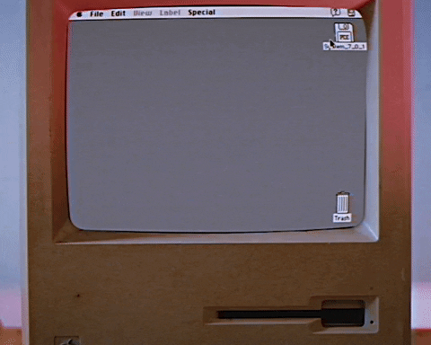

Revolutionary user interface.
The graphical user interface used by Apple Computer's Macintosh family of personal computers, based on graphical representations of familiar office objects (sheets of paper, files, wastepaper bin, etc.) positioned on a two-dimensional "desktop" workspace. Programs and data files are represented on screen by small pictures (icons). An object is selected by moving a mouse over the real desktop which correspondingly moves the pointer on screen. When the pointer is over an icon on screen, the icon is selected by pressing the button on the mouse. A hierarchical file system is provided that lets a user "drag" a document (a file) icon into and out of a folder (directory) icon. Folders can also contain other folders and so on. To delete a document, its icon is dragged into a trash can icon. For people that are not computer enthusiasts, managing files on the Macintosh is easier than using the MS-DOS or Unix command-line interpreter. The Macintosh always displays a row of menu titles at the top of the screen. When a mouse button is pressed over a title, a pull-down menu appears below it. With the mouse button held down, the option within the menu is selected by pointing to it and then releasing the button.